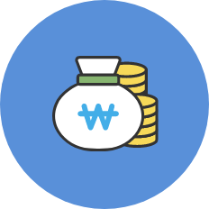
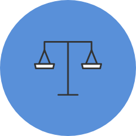

·햇살론(근로자)
※ 햇살론은 복권기금의 재원으로 운영됩니다.
햇살론은 제도권금융 접근이 어려운 저소득·저신용 금융취약계층에 대한 보증부대출을 통해 금융접근성 제고, 금리 부담 완화로 서민층의 금융애로 해소를 지원하는 상품
-
대출기간
3년 또는 5년
-
대출한도

최대 2,000만원
(’22.2.25~12.31일 한시적 증액)
-
대출자격

1. 연소득 3,500만원 이하
2. 개인신용평점이 하위 100분의 20*에 해당하면서
연소득 4,500만원 이하
* ’21년 기준 NICE 744점,KCB 700점 이하
-
대출금리
10.5% 이하
- 지원대상
- 3개월 이상 재직자 신청가능
(단, 이직 등의 경우 현 직장에서 1개월 이상 재직중이고(급여수령 必) 최근 1년 이내 3개월 이상 근로의 경우 재직요건 충족 인정)
저소득자 : 연소득 3,500만원 이하
저신용자 : 개인신용평점이 하위 100분의 20*에 해당하면서 연소득 4,500만원 이하
* ’21년 기준 NICE 744점,KCB 700점 이하
- 대출(보증)한도
- 최대 2,000만원(’22.2.25~12.31일 한시적 증액)
- 대출금리
- 매월 금융감독원에서 통보하는 상한금리 이내에서 금융회사가 자율적으로 결정
최대 10.5% 이하
- 대출기간
- 3년 또는 5년
- 상환방식
- 원금균등분할상환
- 상품종류안내
- 상품종류 - 생계자금
한도 - 최대 2,000만원 이내*
대상 - 3개월 이상 재직자
(단, 이직 등의 경우 현 직장에서 1개월 이상 재직중이고(급여수령 必) 최근 1년 이내 3개월 이상 근로의 경우 재직요건 충족 인정)
* (’22.2.25~12.31일 까지 한시적 증액)
- 햇살론 신청절차
- 햇살론은 상호금융조합 과 저축은행에서 신청 가능(지점, 모바일앱 가능)
다만, 모바일앱으로 신청시 만 19세 이상이면서 본인명의 공인인증서가 필요
- 보증수수료
- 보증금액(대출금액의 90%)의 연 2.0%
사회적배려대상자*(1.0%p), 저소득청년**(0.5%p), 금융교육 또는 신용·부채관리컨설팅 이수자(0.1%p)는 보증료 인하 혜택 제공
* 한부모가족, 조손가족, 다문화가족, 북한이탈주민, 등록장애인, 국민기초생활수급자, 차상위계층, 근로장려금 수급자, 자활근로자
** 만 19세~34세이면서 연소득 35백만원 이하인 청년(사회적배려대상자 보증료인하와 중복적용 불가)
- 제출 필요서류
- 지점 : 신분증, 주민등록등본, 재직증명서, 급여통장 거래내역조회표 등 발급일 1개월 이내 서류만 인정되며, 대출 심사시 내용에 따라 추가 서류를 요청할 수 있습니다.
온라인 : 신분증, 공인인증서, 국민건강보험공단 자격득실확인서, 보험료 납부확인서
- 취급기관
- 저축은행
농협, 새마을금고, 신협, 수협, 산림조합(이하 상호금융기관)
- 취급제한
- 한국신용정보원 “신용관리규약”에서 정하는 아래의 신용정보가 등재되어있는 경우
* 연체정보, 대위변제·대지급정보, 부도정보, 관련인 정보, 금융질서문란정보
** 공공정보(신용회복위원회의 신용회복지원등록정보, 개인회생정보, 파산정보 등)
공공정보 보유자 중 신용회복위원회의 개인워크아웃 또는 개인회생 절차가 진행 중인 자 중 6회(6개월) 이상(유예기간 제외)
연체(미납) 없이 상환중인 자는 취급가능하나 납입유예는 제외
최근 3개월 이내 30일 이상 연체가 1회 이상 있거나, 10일 이상 연체를 4회 이상 한 경우
서민금융진흥원, 지역신용보증재단, 신용보증재단중앙회의 보증사고관계자(사고유보포함) 또는 대위변제관계자로 규제 중이거나, 진흥원 및 신용보증재단중앙회에 손실을 입힌 자
서민금융진흥원의 개인신용평가시스템에 의해 거절된 자